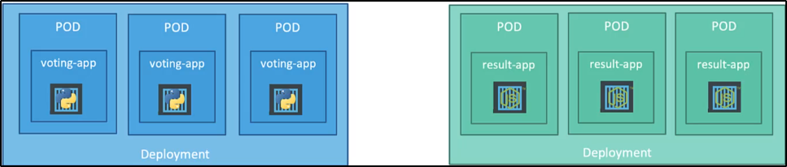

Service - Load Balancer
Esiste un altro tipo di Service chiamato Load Balancer.
Fino ad ora, abbiamo visto:
NodePort, per esporre i servizi al mondo esterno, su un Worker Node.
Diamo un occhiata ad una semplice app di esempio:
voting-app e resulting-app.

Ora sappiamo che tutti questi PODs sono hostati su differenti nodi.
Per renderli disponibili questi servizi, usiamo dei NodePort Service.

I NodePort, in questo caso, ci aiutano a distribuire il carico su differenti nodi.
Ma il problema è: che URL diamo al nostro utente finale?
Potremmo dare una di qualsiasi nodo, ma non è una buona idea da ricordare.

Ma l'utente vuole semplicemente un unica URL per accedere al servizio:

Una soluzione è:
Creare una nuova VM per il Load Balancer ed installare un Load Balancer sopra,
come ngproxy or nginx.
Poi bisognerebbe configurare il Load Balancer per il routing dei nodi sottostanti.
Ora, settare tutto questo Load Balancing esterno può essere time consuming e complicato.

Tuttavia, se sono su una Cloud Platform come AWS, Google Cloud o Azure, posso sfruttare
il Load Balancer di base di quella piattaforma!
Basta creare un Service con tipo LoadBalancer ed il gioco è fatto.

NB: In un unsupported environment, come VirtualBox,
avrebbe lo stesso effetto di settare un NodePort,
dove i servizi sono esposti su una high end note.
Questo non farà nessun tipo di Load Balancer configuration.